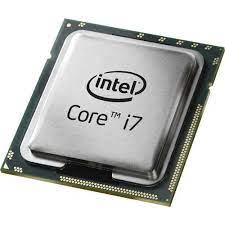
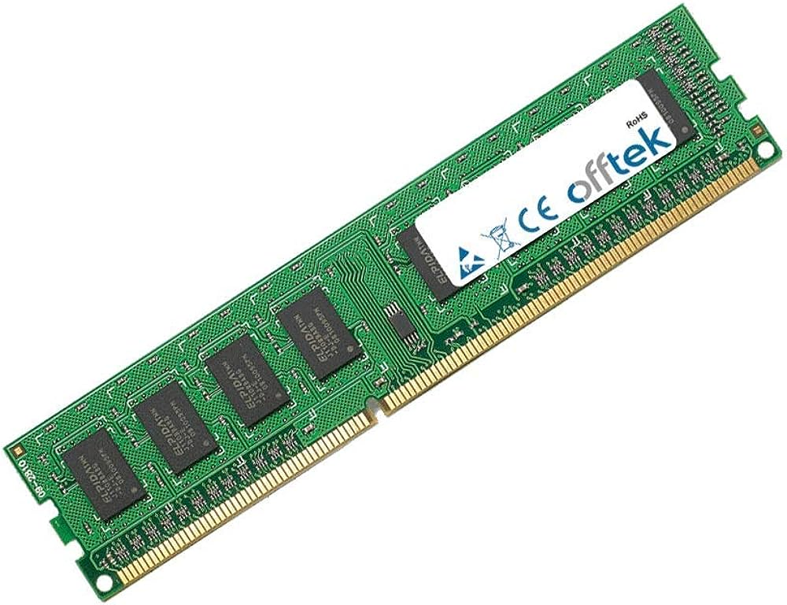
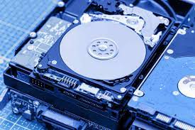

Conocemos al ordenador como aquella máquina que tenemos en casa con la que gracias a ella podemos realizar muchos trámites, pero pocos de nosotros conocemos realmente que compone al ordenador.
Podemos decir que el ordenador está compuesto por el Hardware, que son las piezas físicas que lo componen, el Software, que es el conjunto de programas que hay en el, y el componente humano, ya que un ordenador por sí solo no tiene voluntad de hacer nada.

En esta pequeña web simplemente veremos imagenes algunas imagenes de algunos componentes que forman el Hardware.
  